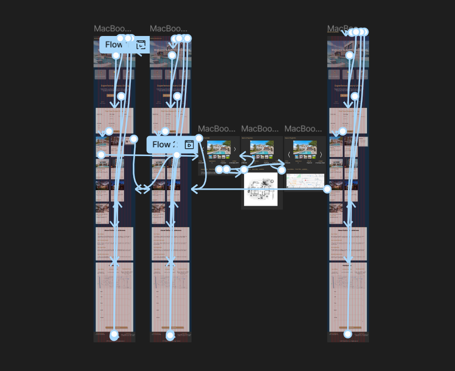
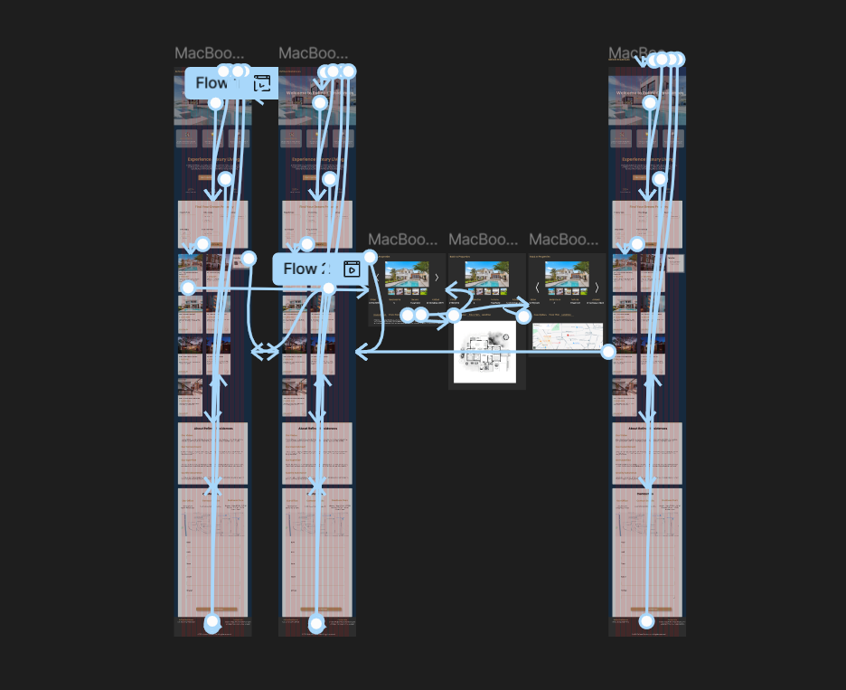

Project Overview
Refined Residences is a modern, client-side estate agent web application designed to simplify property discovery and management. Built with React, it allows users to search, filter, and save favourite properties using an interactive and visually engaging interface. The app emphasizes user experience with responsive layouts, dynamic filtering, and intuitive features inspired by leading property platforms.
UI/UX Design
I designed the complete user interface and user experience for Refined Residences, focusing on intuitive navigation, modern aesthetics, and responsive layouts. The design process included wireframing, prototyping, and user testing to ensure a seamless and engaging experience across devices.
.png) 

Key Features
.png)
- Search by type, price range, bedrooms, date, and postcode area
- Filter properties with dynamic React form components
- JSON-based data (7 properties)
- Responsive design using CSS Flexbox & Media Queries
- Property pages with image sliders, long descriptions, floorplans, and maps
- Drag & drop and button-based favouriting using local storage
Technologies Used
Reflection
This project helped strengthen my skills in component-based UI design, React state management, and client-side data handling. Implementing drag-and-drop functionality and responsiveness without server-side features was both a challenge and a learning experience.
Live Demo & Source Code
Try the live app here:
https://refined-residences.vercel.app/